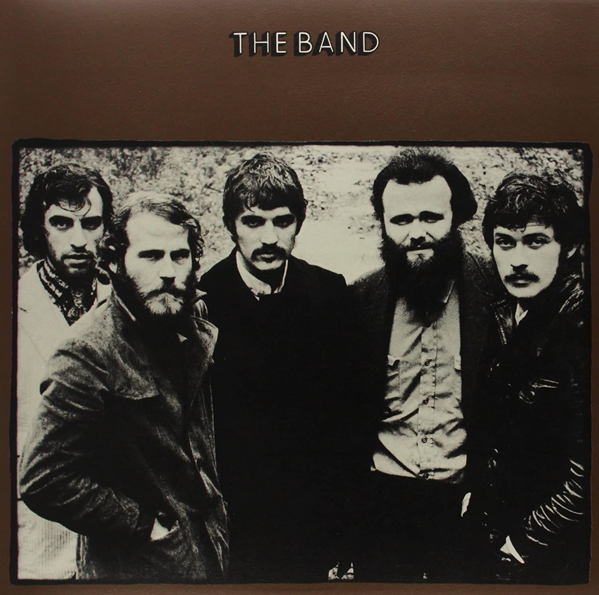

Lexicon of Song:
“King Harvest (Has Surely Come)”
A song written by Robbie Robertson in 1969
05 May 2003 · min read
This is a great recording by The Band, co-produced by John Simon.
Let’s start by reviewing the lyrics, which are central to the recording.
Corn in the fields.
Listen to the rice when the wind blows ’cross the water…
King Harvest has surely come.I work for the union,
’Cause she’s so good to me;
And I’m bound to come out on top,
That’s where she said I should be.
I will hear every word the boss may say,
For he’s the one who hands me down my pay.
Looks like this time I’m gonna get to stay,
I’m a union man, now, all the way.The smell of the leaves,
From the magnolia trees in the meadow…
King Harvest has surely come.Dry summer, then comes fall,
Which I depend on most of all.
Hey, rainmaker, can you hear the call?
Please let these crops grow tall.
Long enough I’ve been up on Skid Row;
And it’s plain to see, I’ve nothing to show.
I’m glad to pay those union dues,
Just don’t judge me by my shoes.Scarecrow and a yellow moon,
Pretty soon a carnival on the edge of town…
King Harvest has surely come.Last year this time, wasn’t no joke,
My whole barn went up in smoke.
Our horse Jethro, well he went mad,
And I can’t ever remember things being that bad.
Then here comes a man with a paper and a pen,
Telling us our hard times are about to end.
And then, if they don’t give us what we like,
He said, “Men, that’s when you gotta go on strike.”Corn in the fields.
Listen to the rice when the wind blows ’cross the water…
King Harvest has surely come.
The lyrics of the song work on many levels. At one level, as Robertson says in the liner notes to the remastered CD of The Band, it is a song about the labor unions, “the quiet revolution when people went from being separated to something making them feel that they were all part of something in their livelihood (1).” At this level, the words reflect one of The Band’s central themes, that of liberation from personal identity into a broader consciousness.
The lyrics work at another level, though. Let’s focus for a moment on what might be called the chorus, the three lines that begin and end the song and, with some variation, separate the verses. There are some unusual elements here. As Rob Bowman notes in the liner notes for the To Kingdom Come compilation, the chorus is quieter than the verse, which is atypical. (2) Also, the song begins with these lines, even though a chorus usually does not appear until after the first verse. We see as well that the words to the chorus are not repeated exactly, with the exception of the final line, which is also the title of the song: “King Harvest has surely come.” Neither do these lines summarize or conclude the action of the verses, as is the norm for a chorus. Finally, we note that these lines have no fixed rhyming structure, which is very unusual for a popular song. Instead each of these three-line stanzas is almost a haiku, even down to the traditional observation of nature and the seasons which is characteristic of this Japanese poetic form.
Given all of these variations from a normal chorus form, it may be better to view these lines as something else altogether. To me they seem to form another song that is combined with the central one. To use terms from William Blake’s poetry, it is as if we have a Song of Innocence intertwined with a Song of Experience. The haiku-like stanzas present the innocent perspective, focusing on simple sensual experiences of nature: the sound of the wind, the smell of the magnolia leaves, the vision of a yellow moon. And then the reference to “King Harvest,” a seemingly mythical symbol of the power of nature. All of these images work at a very simple, primitive level of consciousness, referring to timeless aspects of the natural world.
This effect is reinforced by the music. These three lines begin with simple, unadorned, hushed vocals, emphasizing the simplicity and naturalness of the images. When Levon Helm sings “Listen to the rice when the wind blows ’cross the water,” we are waiting, expecting to hear something. Then, Levon Helm responds with a quiet, repeated, slightly rising tapping of his cymbal, mixed with Garth Hudson’s slowly emerging, swirling organ. The sounds and rhythms are natural ones, like the wind blowing through the trees, or cicadas on a summer evening.
Listen to the difference, though, when the band makes the transition to the verse. Nothing is simple or natural! The drums hold everything together, but the guitar, organ and vocals all seem to be fighting each other, straining under some heavy load. One organ line stops and starts, playing off the beat, keeping the listener off-balance. Robertson’s guitar crackles while Manuel is singing, and also between his lines, competing for attention. Richard hesitates in his delivery of the vocals, again as if under some stress, lagging a bit behind the beat. Another organ line quietly builds in the background during the first half of the verse, with long, sustained chords, in defiance of everything else going on. The musical message is clear: undercutting the hopeful optimism of the words in the first verse, there are powerful conflicts at work.
This underlying tension, apparent only in the music of the first verse, emerges into the level of the lyrics on the second verse. Drought threatens the singer’s crops, and he ends up living on skid row. The third verse completes the drama leading up to the singer’s enlistment in the union, with his barn burning and the loss of his horse. By this time, Helm is no longer just keeping the beat, but raining sharp blows against his drums in increasing intensity.
The stark contrast between the two perspectives is complete. In clear opposition to the simple, natural beauty depicted in the chorus-like refrains, we have the imperfection, conflict and defeat of actual life. The tension between the two is unresolved, and irreconcilable. Manuel’s vocal disappears from the last verse, and Robertson’s guitar takes center stage. His quiet instrument alternates between lyric beauty and stinging, sharp rhythmic attacks, perfectly representing the push and pull of the two states, the continuing tension between them.
Robertson’s solo here is a perfect example of the type of playing he describes in talking with Rob Bowman:
This was the new way of dealing with the guitar for me, this very subtle playing, leaving out a lot of stuff and just waiting until the last second and then playing the thing in just the nick of time. It was an approach to playing where it’s so delicate. It’s the opposite of the “in your face” guitar playing that I used to do. This was the kind of thing that was slippery. It was like you have to hold your breath while playing these kinds of solos. You can’t breathe or you’ll throw yourself off. (2)
This recording is a tremendous work of art. When The Band’s recordings were first released, they astonished the rock world with the strength of their ensemble playing. While many bands were experimenting with jazz-like solos and improvisation, The Band reminded everyone of the true rock aesthetic, with compact recordings formed by a balanced interlacing of instruments, each member playing a part in the overall composition, but no one player out in front. The result, as in this case, was high art, dense and rich, with every sonic brush stroke playing a deliberate part in the overall effect.
Originally published at ReasonToRock.com